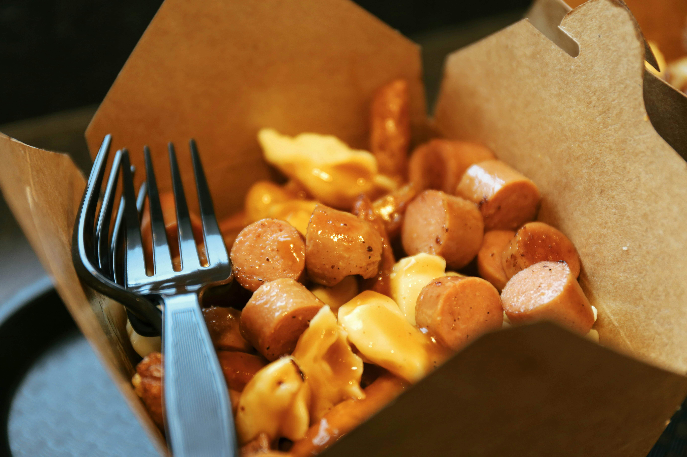

Chili-cheese Dog Crescent Casserole

Description
This dish is a bunch of chili-cheese dogs paired with some crescent rolls to make a really good casserole (with a fun name!). I mean, it takes 8 hotdogs! It's also an incredibly quick dish to make.
Making this dish takes 30 minutes and can serve 6 people. Really good!
Ingredients
- Chili Beans (2 Cans - 15 Ounces Each)
- 8 Sliced Hotdogs
- Shredded American Cheese (1 ½ Cups)
- Crescent Dinner Rolls (1 Can - 8 Ounces)
- Sesame Seeds (1 Tablespoon)
Steps
- In saucepan, mix chili and hot dogs. Heat to boiling over
med-high heat, stirring occasionally.
- Spoon mixture into ungrease 9x13 baking dish. Sprinkle with cheese.
- Cut crescent rolls into 4 long rectangles. Press to seal. Place on top of mixture.
Sprinkle sesame seed.
- Finally, bake in oven at 375 degrees for 15-20 minutes.
Back to Home